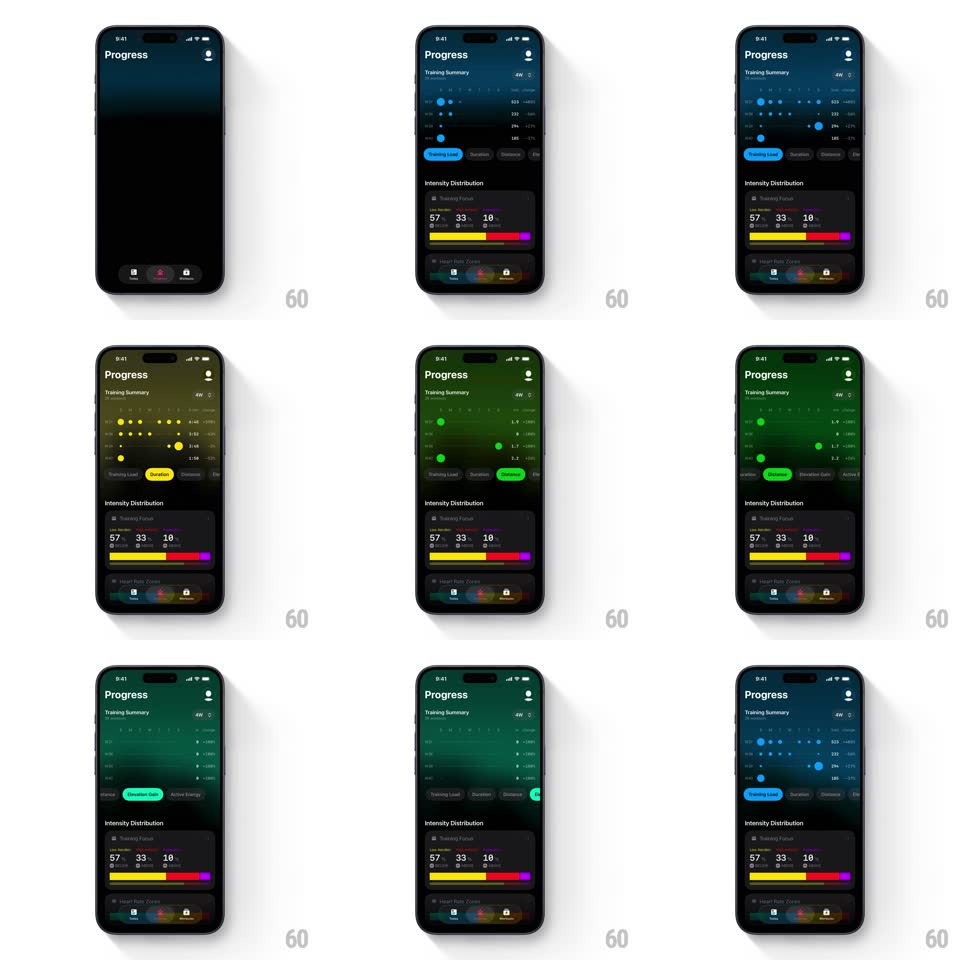

Media
Frame-by-frame

Rebuild this interaction 1:1: The Outsiders' progress graph theming - switching the metric pill on the Progress screen washes the whole screen's accent color (red, blue, yellow, green, teal) through the dot graph, the selected pill, and every accent in one smooth crossfade.

Rebuild this interaction 1:1: The Outsiders' progress graph theming - switching the metric pill on the Progress screen washes the whole screen's accent color (red, blue, yellow, green, teal) through the dot graph, the selected pill, and every accent in one smooth crossfade.
## Integration
Integration: stack-agnostic spec - springs given as stiffness/damping, timed motions as duration + curve; map every value to your framework and animation library of choice.
## Scene
Dark Progress screen: "Training Summary" header with a 4W range, a scatter dot graph (dots in the accent color over a baseline grid), a row of metric pills (Training Load and others - selected one filled), and an Intensity Distribution card ("57 33 10" over a yellow/orange/red/purple segmented bar). Bottom tab bar.
## Motion spec
Pattern: full-theme accent crossfade, ~450ms.
- Tap: the newly selected pill fills with its color (200ms) while the old one deflates to outline.
- Wash: every accent-colored element - graph dots, axis highlight, pill fill, detail values - crossfades from the old hue to the new one (350ms, ease-in-out), staggered ~40ms top-to-bottom for a wash-down feel.
- Graph: the dots re-render for the new metric: each dot springs to its new height (spring ~360/22, 60ms column stagger) while recoloring.
- Distribution: the Intensity Distribution values count to their new numbers (300ms) but keep their fixed segment colors.
## Calibration
- The wash covers all accents at once - no element may hold the old color past 450ms.
- Each metric owns one hue; the mapping is fixed, not cyclical.
## Reduced motion
Colors crossfade (300ms); dots jump to new heights without spring.
## Don't miss
- The top-to-bottom stagger makes it a wash, not a palette swap - keep the 40ms cascade.
- The multi-colored intensity bar is exempt: it never recolors.